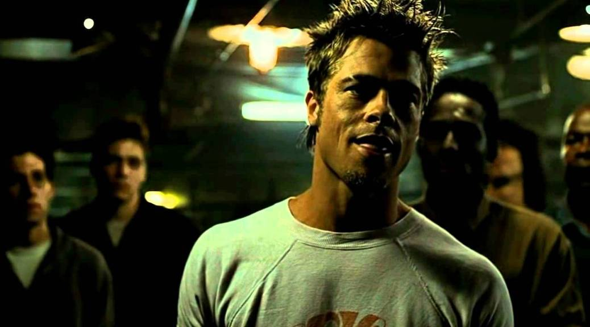
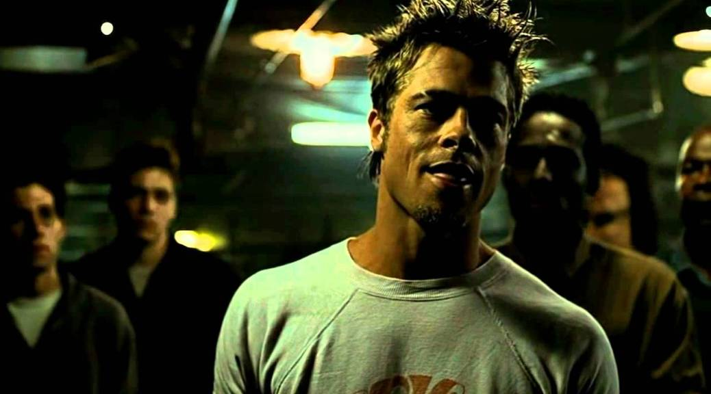

Clube da luta não é um filme sobre pessoas que se reuném para brigar e sim sobre a falta de rituais de passagem de meninos para homens. É sobre uma crise na masculinidade.
No filme, o protagonista é um clássico trabalhador burocrata que abandona suas preocupações com viagens de primeira classe e começa a se sentir vivo de verdade quando conhece o Tyler e encontra seu ritual de passagem.
Na mensagem do filme, você se torna um homem quando entende as regras do jogo do sistema. Não é sobre ter um carrão, o melhor tênis, o melhor celular é sobre se desfazer das amarras invisiveis da sociedade.
Clube da luta é sobre um menino castrado pela sociedade consumista que se transforma em homem quando entende que o verdadeiro significado da vida é ser e não ter. É um filme que passa a mensagem "Torna-te quem tu és" do Nietzsche
Você já parou pra pensar oque você quer ser? Não oque você quer ter, mas ser. Você pode ser só um menino perdido procurando o seu ritual de passagem afundado em uma rotina.
O significado da vida é cultivar uma essência de forma que se você não ter mais seus 'brinquedos' a vida ainda pode ter sentido. Construa seu corpo, sua mente e sua rede de apoio. Depois, se sobrar tempo, compre seu brinquedo.